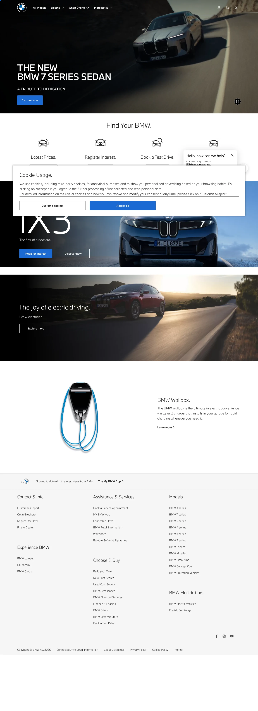

BMW 主题
BMW 的 Design.md 主题展示，围绕媒体内容、工业工具、制造工业、B2B 产品组织页面。
Luxury automotive. Dark premium surfaces, precise German engineering aesthetic.
媒体内容工业工具制造工业B2B 产品暗色界面高级质感SaaS 产品开发工具浅色界面效率工具专业工具

来源
- 来源
- getdesign.md
- 镜像
- github:VoltAgent/awesome-design-md
- 网站
- https://bmw.com/
- 详情
- https://getdesign.md/bmw/design-md
色板
#1a2129: #1a2129#1c69d4: #1c69d4#0653b6: #0653b6#262626: #262626#d6d6d6: #d6d6d6#3c3c3c: #3c3c3c#1a1a1a: #1a1a1a#6b6b6b: #6b6b6b#9a9a9a: #9a9a9a#e6e6e6: #e6e6e6#cccccc: #cccccc#ffffff: #ffffff
字体
display: BMW Type Next Latinbody: Robotomono: ui-monospacehints: BMW Type Next Latin,Roboto,ui-monospace,Inter
圆角
control: 0pxcard: 8pxpreview: 12pxpill: 9999pxsource: design-md
间距
xxs: 4pxxs: 8pxsm: 12pxmd: 16pxlg: 24pxxl: 32pxxxl: 48pxsection: 80pxsource: design-md
使用建议
建议
- 建议：Sit every page on {colors.canvas} (pure white); reserve {colors.surface-dark} for hero bands only。
- 建议：Pair primary CTAs with {colors.primary} (BMW Blue) + {colors.on-primary} white text + {rounded.none} 0px corners — the corporate signature。
- 建议：Set display headlines in BMW Type Next Latin 700 and body in Light 300. The contrast is non-negotiable。
- 建议：Use UPPERCASE letter-spaced links like "LEARN MORE" as inline CTAs。
- 建议：Place the model card photo on {colors.surface-card} with the title beneath — the standard BMW corporate pattern。
避免
- 避免：add a brand color other than blue — BMW Blue is the only primary action color。
- 避免：use pill or rounded buttons — {rounded.none} (0px) rectangular IS the brand button。
- 避免：drop display weight to 500 — the system uses 700 / 400 / 300; 500 is absent。
- 避免：bold body type — Light 300 is the BMW corporate editorial voice。
- 避免：add drop shadows to cards — depth comes from photo + color-block contrast。
查看 DESIGN.md